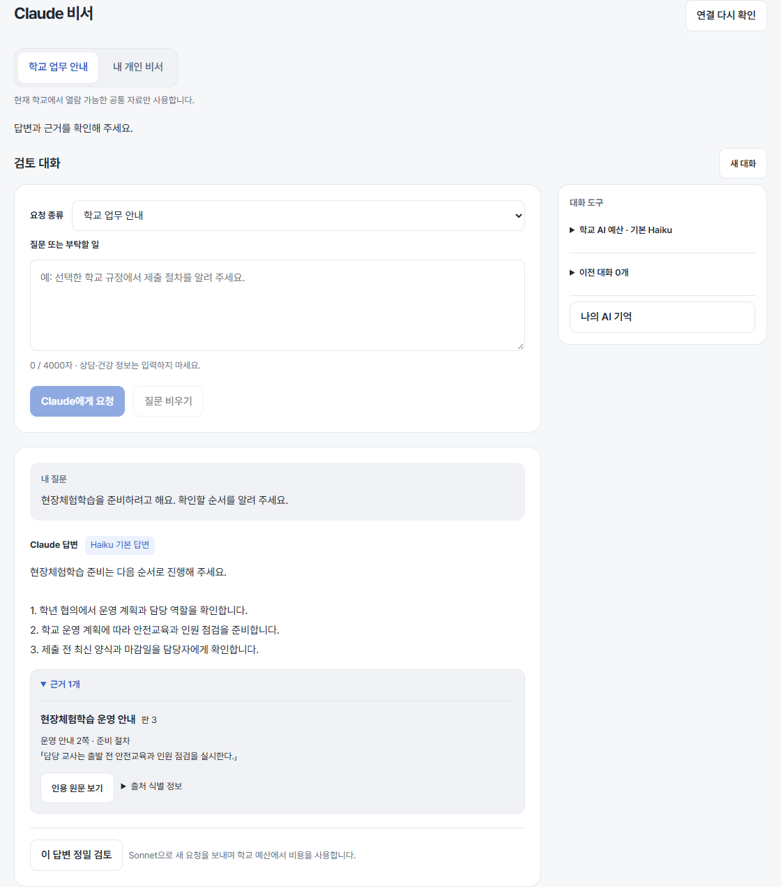
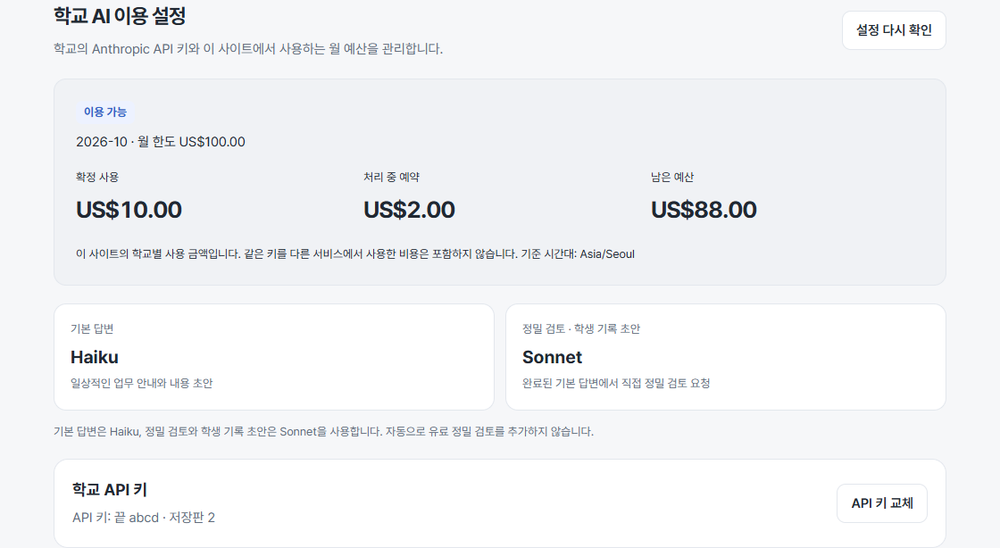
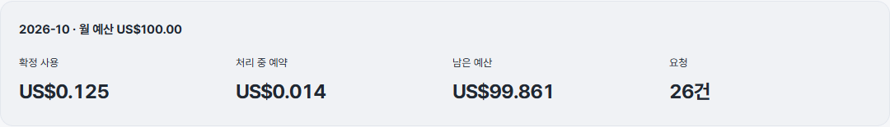
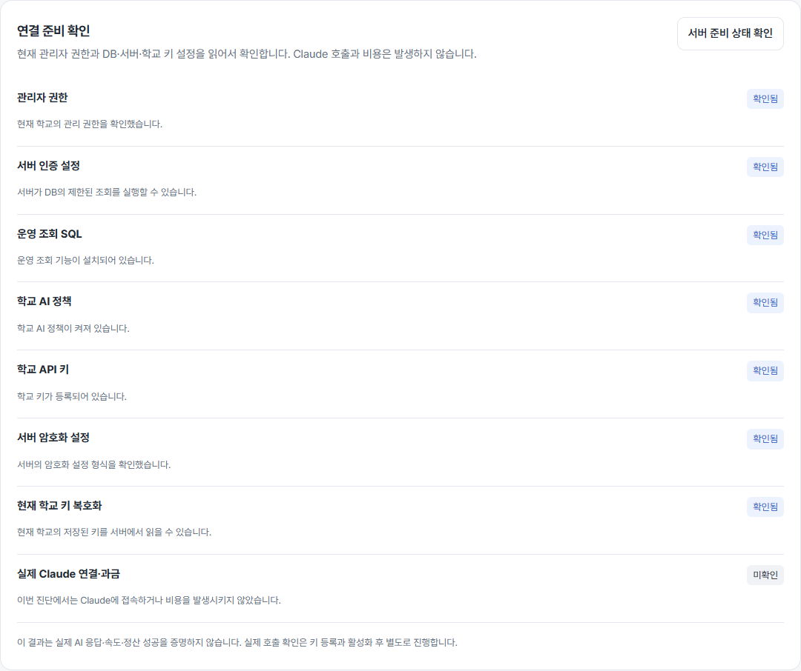
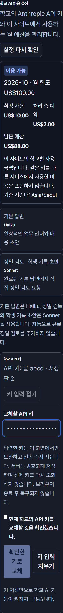

AI 답변 · 근거 · 개인 기억 · 관리자 설정
실제 React 화면에 합성 자료를 넣은 캡처입니다. 실제 사용액·키·운영 자료가 아닙니다. 이미지를 누르면 원래 크기로 열립니다.
AI 답변과 근거
질문·답변·인용 원문을 구분하고, 보조 도구는 오른쪽으로 모았습니다. 넓은 화면 캡처입니다.

학교 AI 이용 설정
예산·모델 사용 구분·키 등록 상태부터 확인합니다. 키 교체 입력은 필요할 때 엽니다.

운영 현황 요약
확정 사용·예약·잔액을 함께 확인합니다. 캡처 금액은 시험용 합성 자료입니다.

서버 연결 진단
각 확인 결과를 배지로 구분합니다. 진단만으로 실제 AI 과금 성공을 단정하지 않습니다.

작은 화면과 큰 글씨
320px 폭, 두 배 글씨, 어두운 화면에서도 입력과 확인 순서를 유지합니다.
